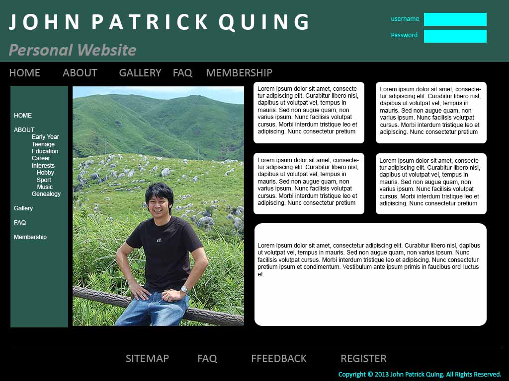

Frequently Ask Questions
- Q: How did you go about designing your website?
A: I design my website to share information on my family,colleagues and potential future employer.
- Q:What aspects of good web design did you adhere to?
A: Designing my website I apply the Usability and Visual design.
- Q:How did you develop the textual component for your website?
A: I use plain language and keep it short to write the text component of website
- Q:How did you decide the layout of your homepage?
A: I use global main hyperlinks and put the recent topics on top designing my homepage.
- Q:What age group is your website aimed at and why?
A: My target audience with age between 20 to 50 because they will more appreaciate the formality theme design i used in my website.
- Q: What does your mock-up Homepage look like?
A: My mockup look likes exactly the same that in my website.

- Q:What aspect of the website was the most problematic and why?
A: I found that making the login page is the most difficult part because it requires a programming script able to run function of login page.
- Q:What are aspects of your website that you find particlarly pleasing and why?
A: My homepage is the most pleasing page of my website because..
- Q: If you were allowed to change ONE thing about your website what would it be?
A: I would like to remove one of my global links.
- Q:What would you change it to and what difference would that make?
A: I probably change it to breadcrumbs to help users locate themselves in my website